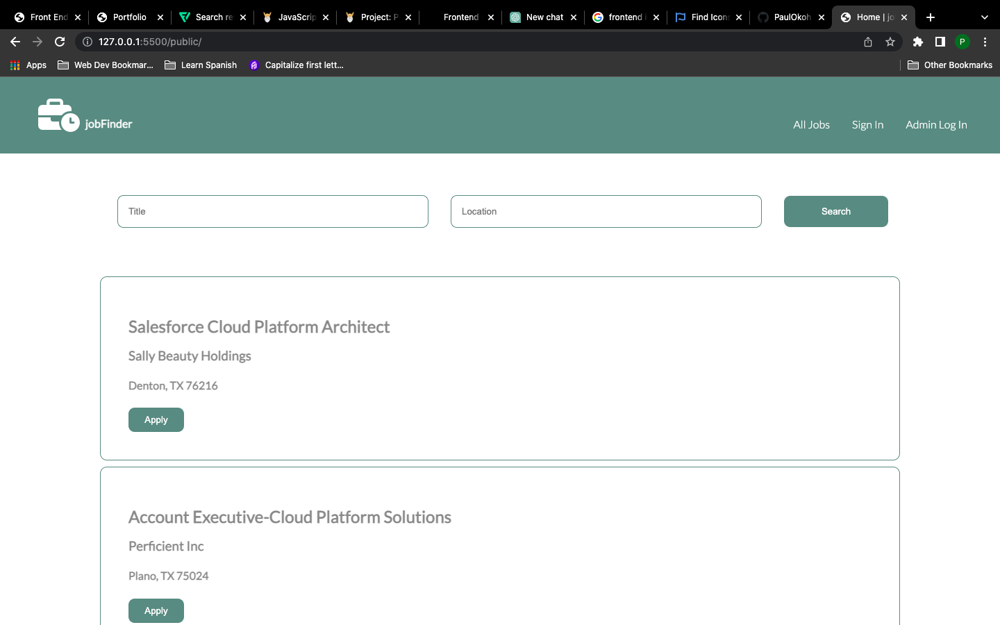

Web Developer
Job finder is a fullstack app built using vanilla javascript. Users can search for jobs using keywords and have their search results displayed. Admins can post and delete jobs. Data for app is stored on a PostgreSQL data base hosted on bit.io. Technologies Used Nodejs,Express, PostgreSQL,Sequelize